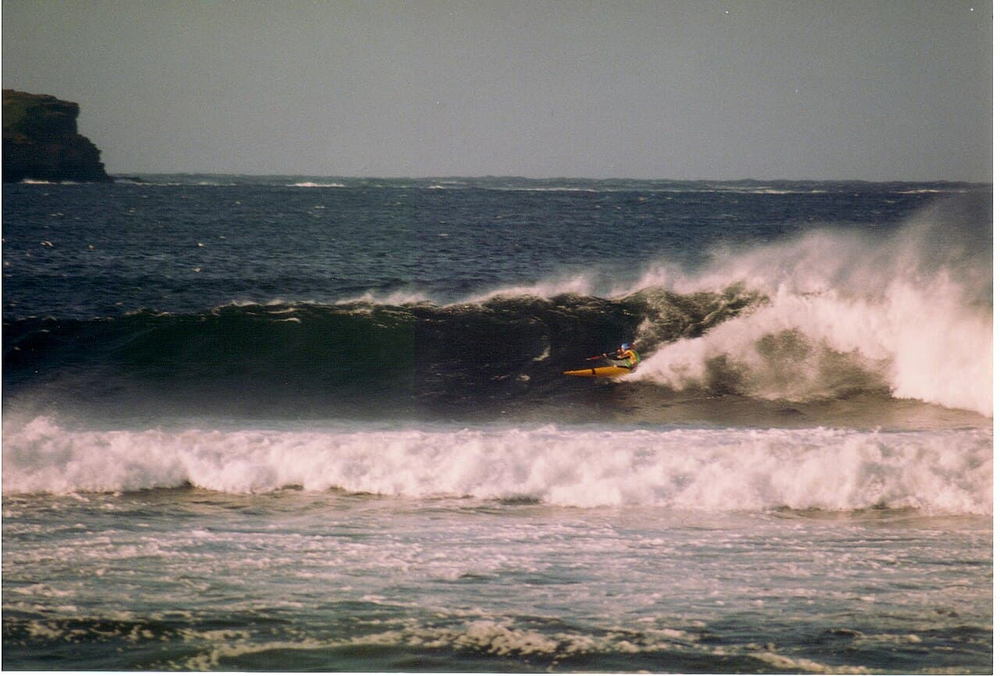

Thurso East
Écosse (UK) · surf

Un reef break glacial et parfait tout au nord de l'Écosse : des tubes de droite dans une eau à faire pâlir.
- Lieu
- Écosse (UK)
- Niveau
- Expert
- Activités
- surf
- Type d'eau
- Mer / océan
- Coordonnées
- 58.59, -3.52 (position approximative du secteur)
Dangers à connaître
- Eau glaciale, combi épaisse.
- Reef peu profond.
Le conseil d'Ocean Buddy
Combi 5/4 + bottes + gants + cagoule obligatoires : c'est froid mais parfait.
Ouvrir dans Ocean Buddy Télécharger sur l'App Store
Source : Description historique Ocean Buddy · vérification externe en attente.